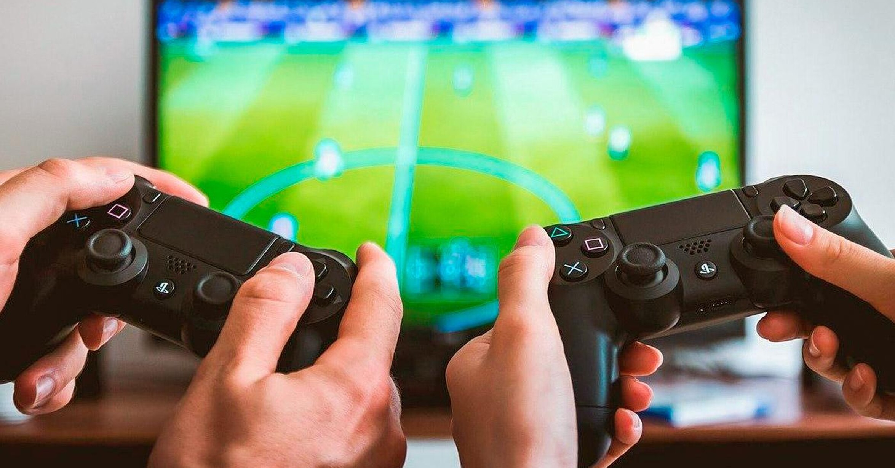

TOP MEJORES VIFEOJUEGOS de todos los tiempos  TOP MEJORES VIFEOJUEGOS 11/11/21 estos son los mejores juegos del 2021 bienvenido al blog de los mejores videojuegos entraremos a un top 5 en el top 5 tenemos a fifa es un juego de futbol y estrategia en el que debes crear tu mejor equipo para ganar todas las copas del mundo desde la champions hasta las copa del mundo este juego es uno de los favoritos de los niños y adolecentes en top 4 fortnite es un juego de guerray un battle royale donde compites conrea 99 jugadores por la victory royale en este puedes jugar con tus amigos en diferentes modos de juego en top3 warson es igual qye fortnite pero mas realista con mejores graficos y mas seco con animaciones inchrehibles es un modo de juego contra 50 por la victoria campal un reto sera tener las mejores armas y mejorarlas a doradas top 2 clash royale es un juego de estratejia el cual tienes cartas y compites con el resto del mundo para jugar contra contricantes de tu nivel hay arenas y miestas mas juegues y mas ganes vas subiendo top 1 friv juegos es una plataforma con muchisimos juegos si un dia aburrido entra a friv.com y encontraras mucho entretenimiento con juegos de calidad
TOP MEJORES VIFEOJUEGOS de todos los tiempos TOP MEJORES VIFEOJUEGOS 11/11/21 estos son los mejores juegos del 2021 f2 race to live forza rocket league f1 mario bros minecraft clah royale crossy road call of duty fortnite